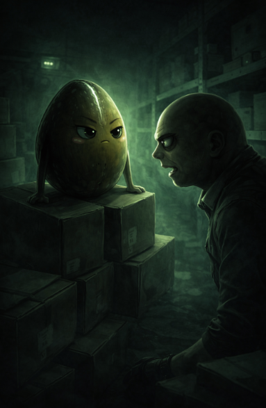

DOCUMENTO NON CLASSIFICATO – ORA IGNOTA
Martedì 08 marzo 2026
Luogo: magazzino, settore B, scaffale 7. Dietro le scatole delle Biloba.
Il magazzino di notte non dorme mai del tutto. Respira. Si assesta. Emette piccoli suoni metallici che nessuno sente perché nessuno ascolta. Le luci di emergenza tingono tutto di un verde basso, malato, il tipo di luce che non illumina ma suggerisce. Le ombre non cadono — si appoggiano.
E in quel verde freddo, quella notte, due figure si trovarono faccia a faccia per la prima volta. Non fu una coincidenza. Le coincidenze non esistono quando qualcuno ha già scelto l'orario.
QuaSim era arrivato per primo. Naturalmente. Era il tipo che arriva sempre per primo ai posti dove non dovrebbe trovarsi, con quella calma ostentata di chi ha già deciso come andrà a finire. Si era sistemato sopra una scatola leggermente aperta, la cicatrice sulla testa che nel verde delle luci di emergenza sembrava quasi pulsare, come una ferita che non ha intenzione di rimarginarsi del tutto.
Aspettò, non molto per la verità.
Albucaos arrivò dal corridoio laterale con quella sua andatura sbilanciata, la testa pelata che rifletteva il verde delle luci, la bocca socchiusa nell'espressione consueta che oscillava tra l'ebetismo e qualcosa di molto più calcolato.
Lungo il percorso aveva già lasciato due segni del suo passaggio: un bancale smosso, un'etichetta capovolta su una scatola di bulloni. Piccole perturbazioni. Firme involontarie. O forse no. Si fermò a un metro da QuaSim. I due si osservarono in silenzio per qualche secondo. Era il silenzio di chi non ha bisogno di presentazioni perché si è già studiato a distanza da abbastanza tempo.
Fu QuaSim a parlare per primo.
— Hai fatto tardi.
Albucaos inclinò la testa.
— Ho incontrato una sedia nel corridoio.
— E?
— Adesso è nel posto sbagliato.
Ci fu un attimo di silenzio.
— Bene, disse QuaSim. Non era un complimento. Era una registrazione. Si spostò leggermente, e la cicatrice catturò la luce verde da un angolo diverso. Sembrava più profonda così. Più verticale, come un confine tracciato su una mappa.
— Sai perché sei qui, disse. Non era una domanda.
Albucaos non rispose subito. Girò lentamente lo sguardo sugli scaffali, sulle scatole allineate, sul pavimento ancora leggermente unto in un angolo. Poi tornò a guardare QuaSim.
— Il seme di avocado.
— Il seme di avocado, confermò QuaSim.
Sta crescendo. Due foglie. Radici che si espandono. Ha già cominciato a pensare in grande. Fece una pausa breve, chirurgica.
— È pericoloso.
Albucaos emise un suono basso che poteva essere una risata.
— Pericoloso. Un avocado in un bicchiere.
— Un avocado in un bicchiere che crede di poter conquistare questa azienda. La convinzione è più pericolosa della forza. La forza si può contenere. La convinzione si diffonde.
Il silenzio tornò a riempire lo spazio tra loro.
— Cosa proponi.
QuaSim scese dalla scatola con un movimento lento e preciso.
— Ci vuole qualcuno dall'interno. Qualcuno che già conosce il seme. Qualcuno che ha già una ragione per odiarlo.
Albucaos non batté ciglio.
— Raffaele.
— Raffaele!
Il nome rimase sospeso nell'aria verde del magazzino.
— Non lo convinciamo, disse QuaSim. Gli diamo solo il permesso di fare quello che vuole già fare.
— La gente non ha bisogno di essere persuasa a tradire. Ha solo bisogno di sapere che qualcuno guarda dall'altra parte.
Albucaos rimase immobile per un lungo momento. — Non aggiungere altro, so come convincerlo Poi si voltò e sparì nel corridoio. Prima di sparire nell'ombra, spostò un'altra scatola di tre centimetri.
QuaSim rimase solo nel verde freddo del magazzino. La cicatrice sulla sua testa non pulsava più. Era ferma. Verticale. Silenziosa. Come un piano che ha già trovato la sua forma definitiva.
Da qualche parte, nell'ufficio al piano di sopra, un bicchiere trasparente conteneva acqua fredda e due foglioline verdi che dormivano ignare.
Inclinate verso una luce che adesso, nel buio, non c'era più.
— Fine documento 🥑
← Vai al Giorno 27 Vai al Giorno 30 →